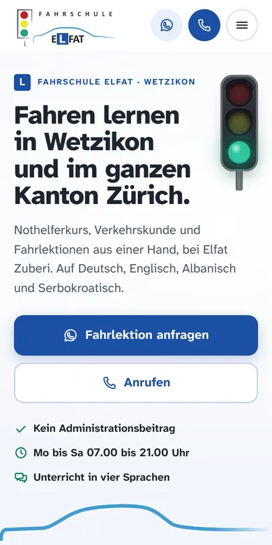

Design A
Ampel
Hell, klar und sehr gut lesbar: Die Ampel aus Ihrem Logo schaltet zu Beginn einmal von Rot über Gelb auf Grün. Ihre drei Farben ordnen danach die drei Schritte mit Preis, vom Nothelferkurs über den VKU bis zu den Fahrlektionen, dazu Gratis-Administration, Empfehlungsprämie und Sie persönlich.
- Hell
- Ampel aus dem Logo
- Drei Schritte